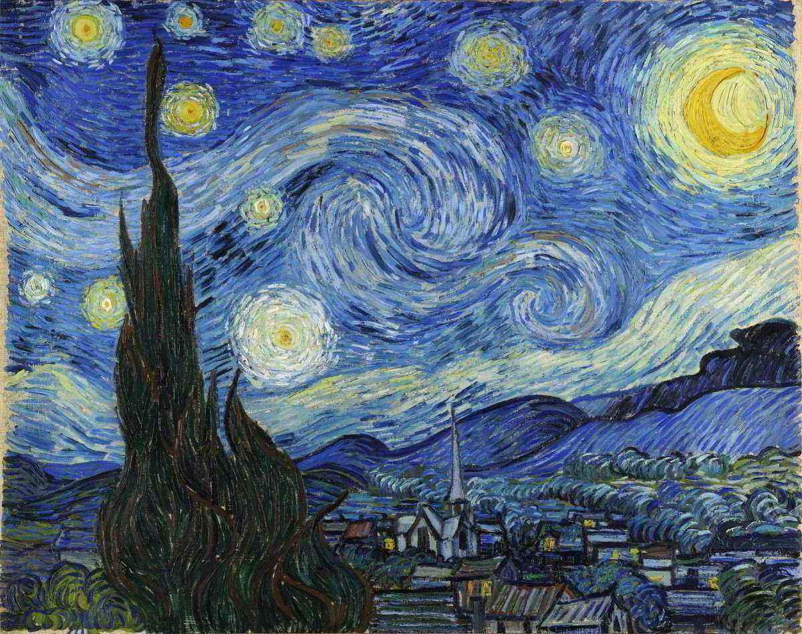
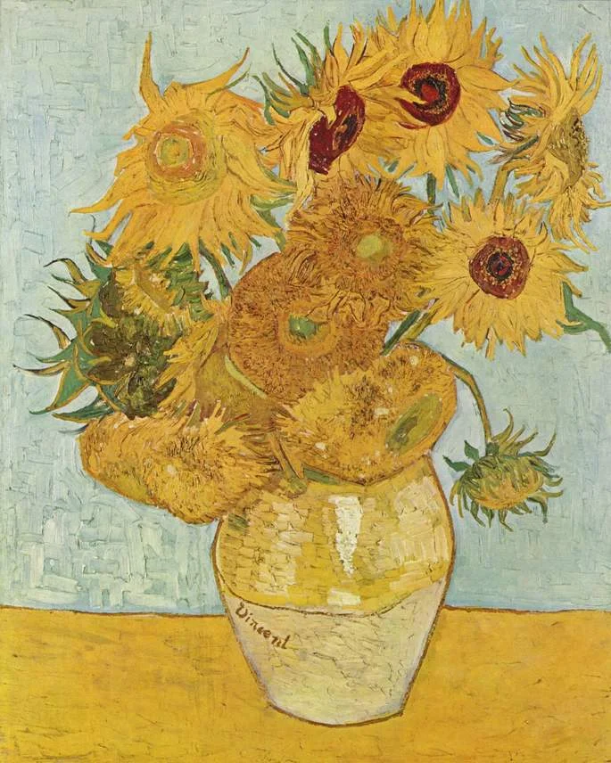
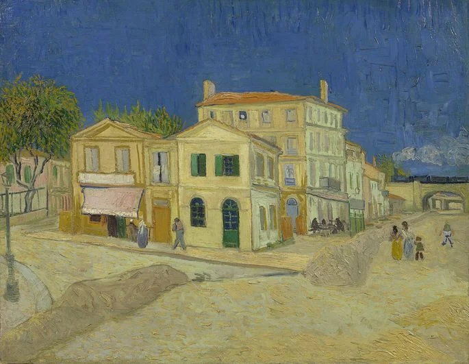
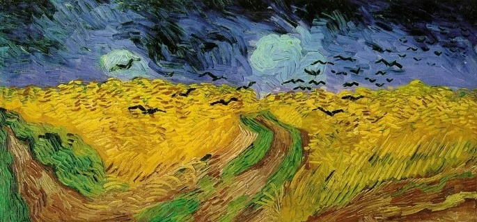

Quadros

Noite Estrelada (1889)

Os girassóis (1889)

Os comedores de batata (1885)

A casa amarela (1888)

Autorretrato com a orelha cortada (1889)

Terraço do café à noite (1888)

Campo de trigo com corvos (1890)

Amendoeira em flor (1890)